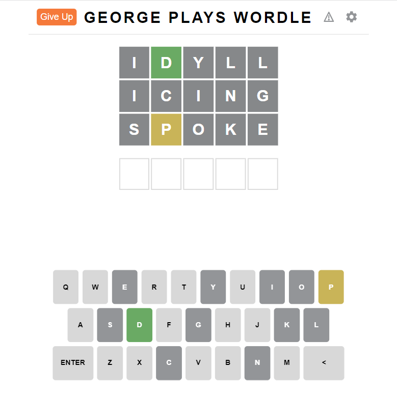
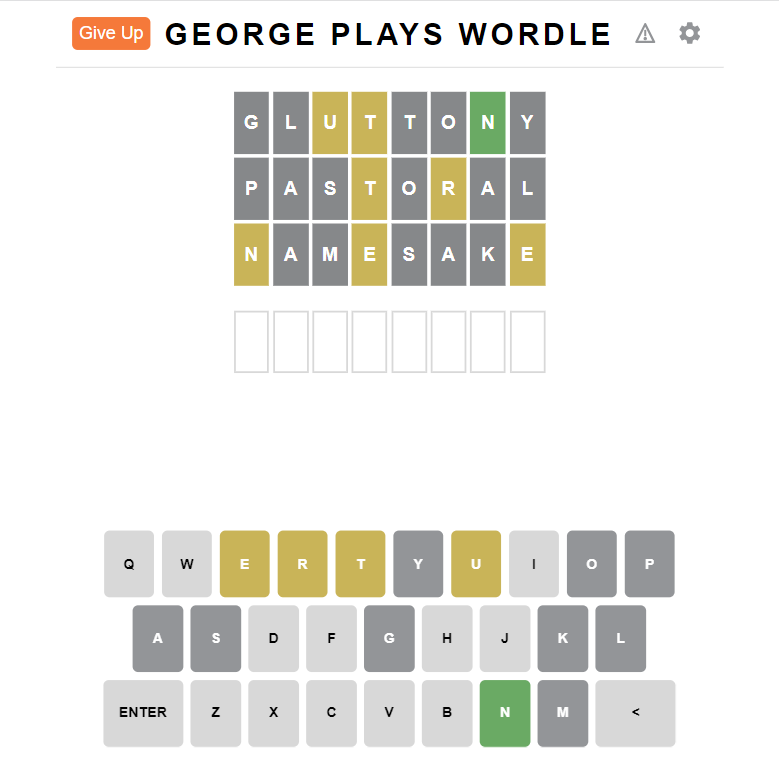

Contents:
Play the game at george.willcox.dev/georgeplayswordle
Introduction:
This is an application I created using React.js, based on the popular Wordle. It uses the same rules, but instead you're given three guesses at the start and you have to get the solution from that. There is only ever one solution to a puzzle.
I've got a bit of experience working with React now, but this was still a good learning experience. It's the first web app I deployed, and I'm reasonably happy with how it turned out.
 About the Program:
This project began life in pygame, more as a proof of concept than anything else. The code for this early version is not well polished, as most of my effort went into creating the React version, but if you're interested you can download it here: george_plays_wordle.zip
For the web app, all the work for generating puzzles is done in the backend using Flask. The algorithm for doing so involves picking the words for the puzzle, making sure that the puzzle is within the restraints for the number of allowed green and yellow letters, and then verifying that there is in fact only one solution.
I won't share the entire source code here, but here is a code snippet of a function which given the guesses, a target, and the restraints, returns whether that puzzle is within the provided restraints.
def puzzle_within_restraints(guesses, target, max_green, max_yellow):
green = "-" * len(target)
yellow = {letter: [0] * len(guesses) for letter in target}
grey = []
for i, guess in enumerate(guesses):
count = {}
for letter in target:
if letter in count:
count[letter] += 1
else:
count[letter] = 1
for j, letter in enumerate(guess):
if letter == target[j]:
green = green[:j] + letter + green[j + 1:]
count[letter] -= 1
for j, letter in enumerate(guess):
if letter in count and count[letter] > 0 and letter != target[j]:
count[letter] -= 1
yellow[letter][i] += 1
elif letter not in yellow and letter not in grey:
grey.append(letter)
yellow = {letter: max(number) for letter, number in yellow.items()}
return len(green.replace("-", "")) <= max_green and sum(yellow.values()) + len(green.replace("-", "")) <= max_yellow + max_greenWord List:
The word list used for what possible guesses come up is a curated list of about 20000 of the most frequent words in the English language. This is as there are many words in the dictionary which are too obscure for most people to know, and I wanted to avoid the feeling of being cheated when the answer is a word nobody's ever heard of.
With the help of some friends, I've removed all the proper nouns and non-words from the list, but in the event some are still left in, there is a report button on the website which allows you to let me know if a word shouldn't come up.